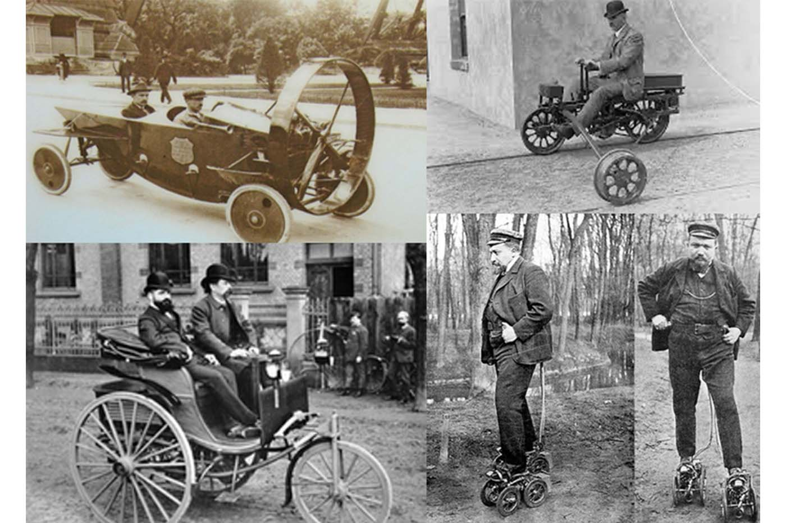
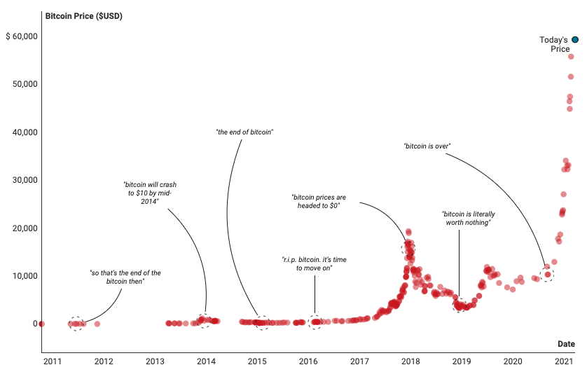

Is Blockchain a Fad?
Originally published at https://singularityhacker.com/is-blockchain-a-fad

Blockchain is the technology on which Bitcoin and all other cryptocurrencies are built. Much of the talk around this technology revolves around speculation and making fast money. Because of this many scams have been pulled and this has, in turn, led many people to discount the entire technology as unnecessary and as even a scam itself. In fact, my favorite place for tech news for over a decade has been Hacker News but you will find nearly all the comments on all articles related to blockchain technology completely dismissive of it. It was pretty shocking to me when I first saw it because the level of disdain for anything related to blockchain technology on Hacker News is nearly absolute. There aren’t even metered assessments such as Blockchain has a specific and limited use case but rather the opinions are that the technology has zero use and has zero value in any context. One can’t help but give pause and really wonder if you’re being deceived when the likes of Bill Gates and Warren Buffett dismiss the entire technology as worthless as well.
Think twice before you listen to advice from people who don’t know the difference between Bitcoin and Blockchain. You might as well take technology advice from someone who doesn’t know the difference between Facebook and the World Wide Web. For as many naysayers, there are thought leaders who pronounce Blockchain as his greatest discovery of man since fire, the wheel, and the internet. Steve Wozniak for one compares it to the early days of Apple when they were still in the garage. The very fact that these disagreements and controversies exist points to the reality of how early we are in the development and application of this technology. The polarization is so deep right now you could almost say that the mental divide that existed between the pre-internet mindsets and the pioneers of the internet now exists between traditional internet thinkers and decentralized Blockchain thinkers. Time will show you who the truly prescient ones were. Consider the following analogy that illustrates where I think we are with this technology.
Imagine we’re in the early nineteen hundreds and there are only 100,000 cars in the country. By 1908 there will be somewhere around 200,000 vehicles registered in the United States and around 500 companies busily making more types of cars. Ford leads the pack with the Model T, Buick is right behind them, and General Motors has just been founded and will be creating even more models. There are no shortage of critics. The president of a Michigan savings bank advised Horace Rackham, Henry Ford’s lawyer, not to invest in his client’s company, telling him, “The horse is here to stay, but the automobile is only a novelty – a fad.” The Washington Post stated that “Local horse dealers do not look upon the advent of the automobile with any degree of seriousness. It is true that society has taken up the automobile, but the dealers consider it nothing but a fad, which will not have as much permanency as the bicycle. They argue that the noise of the engine or motor will soon wear the tender nerves of the society belle or swell to a frazzle and that the odor of the locomobile is not at all agreeable to the sensitive nostrils.” - The Washington Post from May 14th, 1900
Consider the following parallels. Blockchain is to the crypto ecosystem what the internal combustion engine was to the automobile ecosystem. Bitcoin is the Model T of this new burgeoning ecosystem. It has all the brand recognition and it’s come to be almost entirely identified with the automobile itself. But there are many other types of automobiles on the road and many more will come that bring their own unique properties, strengths, and weaknesses. There are numerous other cryptocurrencies and Blockchains that exist besides Bitcoin. There were many unorthodox car designs in the early days and even foolish applications of the internal combustion engine but none of these discounted the entire revolution in transportation that was transpiring.
Just like the analogy with these cars, there doesn’t need to be one car to rule them all or a “winner”. Each protocol can have its own unique properties suited to a specific use case. One doesn’t even need to know which particular car is going to do well or not in the market. Just knowing that the world is going to be overtaken by cars as a product category puts you in an extremely advantageous position. Certainly better than the horse traders who could see nothing but another fad. A person with this knowledge can invest in cars at the ecosystem level. As I’ve stated elsewhere, this technology has produced digital scarcity, something inconceivable prior to the Bitcoin whitepaper and we are in the very early stages of recognizing its impact and potential applications.
There are two methods of analysis that are used when analyzing the value of any asset security. Technical analysis and fundamental analysis. Technical analysis has to do with understanding charts and the fluctuating price of something and trying to infer certain patterns to determine whether the price will go up or down. This is what a lot of people think of when they think of cryptocurrency and Blockchain. This involves studying charts and buying tokens when they’re cheap and waiting for them to go up in value and making lots of money. But fundamental analysis has to do with the intrinsic utility of the thing being studied. That is, regardless of how the price is fluctuating or what the current demand is, how useful is this thing? This is what separates the traders and investors. So drawing upon the previous analogy with the history of automobiles, I asked myself, what is the fundamental utility of programmable digital scarcity? This technology not only has the power to displace everything we’ve known concerning financial systems but it also has the potential to completely rewrite the internet and all digital coordination as we have known it thus far.
